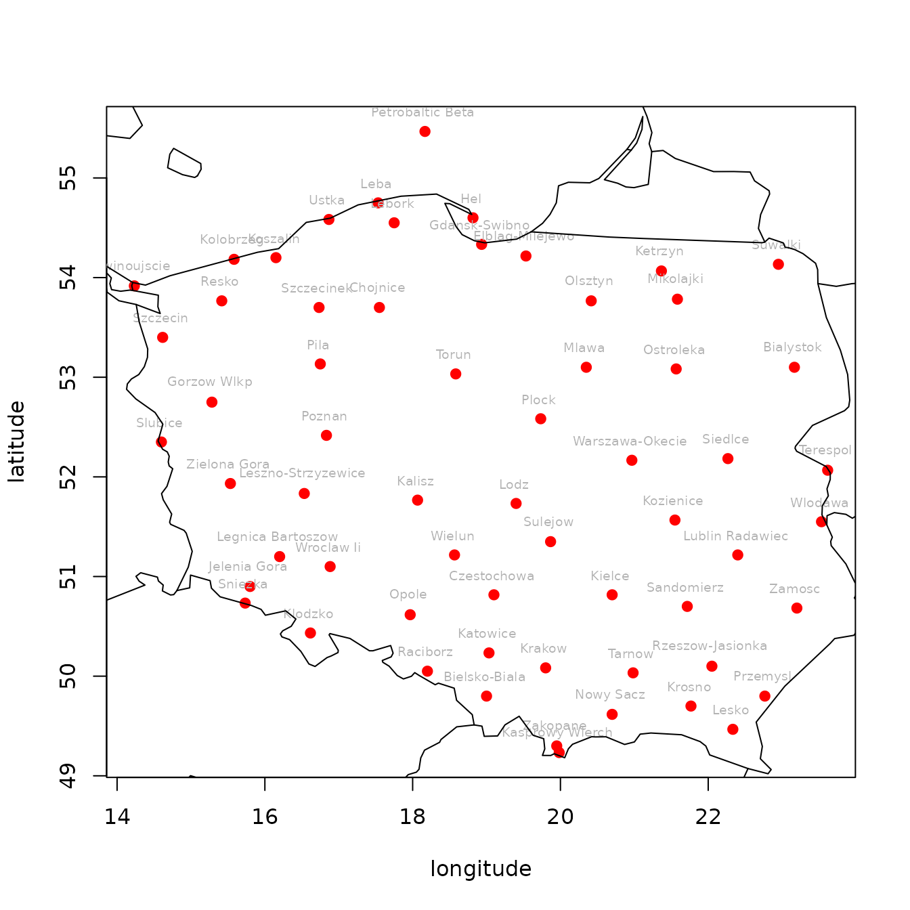

Introduction to the climate package
Bartosz Czernecki, Arkadiusz Głogowski, Jakub Nowosad
2022-10-05
Source:vignettes/getstarted.Rmd
getstarted.RmdThe goal of the climate R package is to automatize downloading of meteorological and hydrological data from publicly available repositories:
- OGIMET (ogimet.com)
- University of Wyoming - atmospheric vertical profiling data (http://weather.uwyo.edu/upperair/).
- Polish Institute of Meterology and Water Management - National Research Institute (IMGW-PIB)
- National Oceanic & Atmospheric Administration - Earth System Research Laboratory - Global Monitoring Division (NOAA)
- National Oceanic & Atmospheric Administration - National Climatic Data Center - Integrated Surface Hourly (ISH) (NOAA)
Functions
The climate package consists of ten main functions - three for meteorological data, one for hydrological data and six auxiliary functions and datasets:
Meteorological data
meteo_ogimet() - Downloading hourly and daily meteorological data from the SYNOP stations available in the ogimet.com collection. Any meteorological (aka SYNOP) station working under the World Meteorological Organizaton framework after year 2000 should be accessible.
meteo_imgw() - Downloading hourly, daily, and monthly meteorological data from the SYNOP/CLIMATE/PRECIP stations available in the dane.imgw.pl collection. It is a wrapper for
meteo_monthly(),meteo_daily(), andmeteo_hourly()from the imgw package.meteo_noaa_hourly() - Downloading hourly NOAA Integrated Surface Hourly (ISH) meteorological data - Some stations have > 100 years long history of observations
sounding_wyoming() - Downloading measurements of the vertical profile of atmosphere (aka rawinsonde data)
Hydrological data
-
hydro_imgw() - Downloading hourly, daily, and monthly hydrological data from the SYNOP / CLIMATE / PRECIP stations available in the danepubliczne.imgw.pl collection. It is a wrapper for
hydro_annual(),hydro_monthly(), andhydro_daily()from the imgw package.
Auxiliary functions and datasets
- stations_ogimet() - Downloading information about all stations available in the selected country in the Ogimet repository
- nearest_stations_ogimet() - Downloading information about nearest stations to the selected point available for the selected country in the Ogimet repository
- imgw_meteo_stations - Built-in metadata from the IMGW-PIB repository for meteorological stations, their geographical coordinates, and ID numbers
- imgw_hydro_stations - Built-in metadata from the IMGW-PIB repository for hydrological stations, their geographical coordinates, and ID numbers
- imgw_meteo_abbrev - Dictionary explaining variables available for meteorological stations (from the IMGW-PIB repository)
- imgw_hydro_abbrev - Dictionary explaining variables available for hydrological stations (from the IMGW-PIB repository)
Examples
Examples shows aplication of climate package with additional use of tools that help with processing the data to increase legible of downloaded data.
Example 1
Finding a 50 nearest meteorological stations for a given coordinates in a given country(ies):
library(climate)
ns = nearest_stations_ogimet(country = c("United Kingdom", "France"),
point = c(-3, 50),
no_of_stations = 50,
add_map = TRUE)
#> [1] "http://ogimet.com/cgi-bin/gsynres?lang=en&state=United+Kingdom&osum=no&fmt=html&ord=REV&ano=2022&mes=10&day=05&hora=06&ndays=1&Send=send"
#> /tmp/Rtmp6av3bl/file43e35f2ef4a
#> [1] "http://ogimet.com/cgi-bin/gsynres?lang=en&state=France&osum=no&fmt=html&ord=REV&ano=2022&mes=10&day=05&hora=06&ndays=1&Send=send"
#> /tmp/Rtmp6av3bl/file43e5b859ef
if(is.data.frame(ns)){
knitr::kable(head(ns, 20))
}| wmo_id | station_names | lon | lat | alt | distance | |
|---|---|---|---|---|---|---|
| 128 | 03894 | Guernsey Airport | -2.600012 | 49.43334 | 102 | 77.82048 |
| 122 | 03857 | Isle Of Portland | -2.466676 | 50.51668 | 53 | 83.31233 |
| 120 | 03844 | Exeter Airport No2 | -3.400008 | 50.73335 | 27 | 93.72323 |
| 119 | 03840 | Dunkeswell Aerodrome | -3.233338 | 50.86668 | 252 | 100.70161 |
| 121 | 03853 | Yeovilton | -2.633346 | 51.00000 | 23 | 119.50052 |
| 145 | 07020 | La Hague | -1.933352 | 49.71668 | 3 | 123.82404 |
| 129 | 03895 | Jersey Airport | -2.200004 | 49.21667 | 84 | 125.62009 |
| 118 | 03827 | Plymouth | -4.116669 | 50.35001 | 50 | 131.29669 |
| 101 | 03710 | Liscombe | -3.600012 | 51.08333 | 348 | 138.94411 |
| 167 | 07117 | Ploumanac’h | -3.466676 | 48.83335 | 50 | 140.97809 |
| 168 | 07118 | Lannion | -3.466676 | 48.75001 | 87 | 149.69950 |
| 123 | 03862 | Bournemouth Airport | -1.833350 | 50.78335 | 11 | 157.66359 |
| 102 | 03716 | St. Athan | -3.433342 | 51.40001 | 49 | 164.42872 |
| 169 | 07120 | Saint-Brieuc | -2.850017 | 48.53334 | 138 | 165.41210 |
| 146 | 07024 | Cherbourg / Maupertus | -1.466676 | 49.65001 | 138 | 176.45842 |
| 100 | 03707 | Chivenor | -4.150003 | 51.08333 | 8 | 177.26086 |
| 138 | 03930 | Almondsbury | -2.550011 | 51.55001 | 52 | 181.08641 |
| 170 | 07125 | Dinard | -2.066668 | 48.58335 | 65 | 190.33860 |
| 104 | 03743 | Larkhill | -1.800016 | 51.20000 | 132 | 190.40311 |
| 105 | 03746 | Boscombe Down | -1.750015 | 51.16667 | 124 | 191.83929 |
Example 2
Summary of stations available in Ogimet repository for a selected country:
library(climate)
PL = stations_ogimet(country = "Poland", add_map = TRUE)
#> [1] "http://ogimet.com/cgi-bin/gsynres?lang=en&state=Poland&osum=no&fmt=html&ord=REV&ano=2022&mes=10&day=05&hora=06&ndays=1&Send=send"
#> /tmp/Rtmp6av3bl/file43e3dab0231
if (is.data.frame(PL)) {
knitr::kable(head(PL))
}| wmo_id | station_names | lon | lat | alt |
|---|---|---|---|---|
| 12001 | Petrobaltic Beta | 18.16667 | 55.46668 | 46 |
| 12100 | Kolobrzeg | 15.58334 | 54.18334 | 3 |
| 12105 | Koszalin | 16.15000 | 54.20000 | 32 |
| 12115 | Ustka | 16.86668 | 54.58335 | 6 |
| 12120 | Leba | 17.53334 | 54.75001 | 2 |
| 12125 | Lebork | 17.75002 | 54.55001 | 17 |
Example 3
Downlading hourly meteorological data from Svalbard (Norway) for year 2016 using NOAA service
# downloading data with NOAA service:
df = meteo_noaa_hourly(station = "010080-99999", year = 2016)
#| |date | year| month| day| hour| lon| lat| alt| t2m| dpt2m| ws| wd| slp| visibility|
#|:--|:-------------------|----:|-----:|---:|----:|------:|-----:|---:|---:|-----:|--:|---:|------:|----------:|
#|1 |2016-01-01 00:00:00 | 2016| 1| 1| 0| 15.467| 78.25| 29| 5.0| -1.6| 5| 200| 1007.5| 65000|
#|3 |2016-01-01 01:00:00 | 2016| 1| 1| 1| 15.467| 78.25| 29| 5.2| -1.7| 3| 180| 1008.2| NA|
#|5 |2016-01-01 02:00:00 | 2016| 1| 1| 2| 15.467| 78.25| 29| 4.6| -1.2| 6| 170| 1008.5| NA|
#|7 |2016-01-01 03:00:00 | 2016| 1| 1| 3| 15.467| 78.25| 29| 4.3| -0.9| 5| 190| 1008.6| 70001|
#|9 |2016-01-01 04:00:00 | 2016| 1| 1| 4| 15.467| 78.25| 29| 3.7| -1.0| 5| 160| 1008.8| NA|
#|11 |2016-01-01 05:00:00 | 2016| 1| 1| 5| 15.467| 78.25| 29| 3.2| -1.0| 4| 150| 1008.6| NA|
# or you can download the same data with Ogimet.com (example for year 2016):
# df = meteo_ogimet(interval = "hourly", date = c("2016-01-01", "2016-12-31"), station = c("01008"))Example 4
Downloading atmospheric vertical profile (sounding) for Łeba, PL station:
library(climate)
data("profile_demo")
# same as:
# profile_demo <- sounding_wyoming(wmo_id = 12120,
# yy = 2000,
# mm = 3,
# dd = 23,
# hh = 0)
df2 = profile_demo[[1]]
colnames(df2)[c(1, 3:4)] = c("PRESS", "TEMP", "DEWPT") # changing column names| PRESS | HGHT | TEMP | DEWPT | RELH | MIXR | DRCT | SKNT | THTA | THTE | THTV |
|---|---|---|---|---|---|---|---|---|---|---|
| 1013 | 6 | 4.2 | 3.8 | 97 | 4.98 | 270 | 8 | 276.3 | 290.0 | 277.2 |
| 1009 | 37 | 2.4 | 2.3 | 99 | 4.50 | 285 | 12 | 274.9 | 287.2 | 275.6 |
| 1000 | 107 | 2.2 | 1.9 | 98 | 4.41 | 295 | 17 | 275.4 | 287.5 | 276.1 |
| 976 | 303 | 0.8 | -1.3 | 86 | 3.58 | 298 | 23 | 275.9 | 285.8 | 276.5 |
| 970 | 352 | 1.0 | -6.0 | 60 | 2.53 | 299 | 25 | 276.6 | 283.8 | 277.0 |
| 959 | 444 | 1.0 | -0.6 | 89 | 3.83 | 300 | 27 | 277.4 | 288.2 | 278.1 |
| 925 | 733 | -1.1 | -1.1 | 100 | 3.83 | 290 | 27 | 278.2 | 288.9 | 278.8 |
| 913 | 837 | -1.5 | -1.5 | 100 | 3.76 | 285 | 27 | 278.8 | 289.4 | 279.4 |
| 877 | 1157 | -2.9 | -2.9 | 100 | 3.54 | 288 | 29 | 280.6 | 290.6 | 281.2 |
| 850 | 1404 | -4.1 | -4.1 | 100 | 3.33 | 290 | 31 | 281.8 | 291.4 | 282.4 |
Example 5
Preparing an annual summary of air temperature and precipitation using dplyr syntax for 10-years period (1991-2000)
library(climate)
library(dplyr)
#>
#> Attaching package: 'dplyr'
#> The following objects are masked from 'package:stats':
#>
#> filter, lag
#> The following objects are masked from 'package:base':
#>
#> intersect, setdiff, setequal, union
df = meteo_imgw(interval = "monthly", rank = "synop", year = 1991:2000, station = "ŁEBA")
#> [1] "https://danepubliczne.imgw.pl/data/dane_pomiarowo_obserwacyjne/dane_meteorologiczne/miesieczne/synop/s_m_d_format.txt"
#> /tmp/Rtmp6av3bl/file43e78c7c1e7
#> [1] "https://danepubliczne.imgw.pl/data/dane_pomiarowo_obserwacyjne/dane_meteorologiczne/miesieczne/synop/s_m_t_format.txt"
#> /tmp/Rtmp6av3bl/file43e4d5714dc
#> [1] "https://danepubliczne.imgw.pl/data/dane_pomiarowo_obserwacyjne/dane_meteorologiczne/miesieczne/synop/"
#> /tmp/Rtmp6av3bl/file43e1a2facaf
#> [1] "https://danepubliczne.imgw.pl/data/dane_pomiarowo_obserwacyjne/dane_meteorologiczne/miesieczne/synop/1991_1995/1991_1995_m_s.zip"
#> /tmp/Rtmp6av3bl/file43e447a023f
#> [1] "https://danepubliczne.imgw.pl/data/dane_pomiarowo_obserwacyjne/dane_meteorologiczne/miesieczne/synop/1996_2000/1996_2000_m_s.zip"
#> /tmp/Rtmp6av3bl/file43e6cc7b670
# please note that sometimes 2 names are used for the same station in different years
df2 = select(df, station:t2m_mean_mon, rr_monthly)
monthly_summary = df2 %>%
group_by(mm) %>%
summarise(tmax = mean(tmax_abs, na.rm = TRUE),
tmin = mean(tmin_abs, na.rm = TRUE),
tavg = mean(t2m_mean_mon, na.rm = TRUE),
precip = sum(rr_monthly) / n_distinct(yy))
monthly_summary = as.data.frame(t(monthly_summary[, c(5, 2, 3, 4)]))
monthly_summary = round(monthly_summary, 1)
colnames(monthly_summary) = month.abb| Jan | Feb | Mar | Apr | May | Jun | Jul | Aug | Sep | Oct | Nov | Dec | |
|---|---|---|---|---|---|---|---|---|---|---|---|---|
| precip | 39.0 | 34.6 | 41.0 | 32.1 | 50.5 | 57.5 | 52.7 | 78.5 | 68.9 | 83.8 | 47.9 | 52.0 |
| tmax | 8.1 | 9.1 | 13.6 | 22.6 | 25.6 | 29.6 | 29.6 | 28.5 | 22.7 | 18.4 | 11.6 | 8.8 |
| tmin | -11.6 | -9.6 | -6.3 | -4.1 | 0.0 | 4.5 | 6.4 | 6.7 | 3.0 | -1.6 | -6.0 | -10.4 |
| tavg | 0.5 | 0.7 | 2.7 | 6.8 | 10.6 | 14.4 | 16.9 | 17.0 | 13.2 | 8.8 | 3.7 | 0.9 |
Example 6
Calculate the mean maximum value of the flow on the stations in each year with dplyr’s summarise(), and spread data by year using tidyr’s spread() to get the annual means of maximum flow in the consecutive columns.
library(climate)
library(dplyr)
library(tidyr)
h = hydro_imgw(interval = "monthly", year = 2001:2002, coords = TRUE)
#> [1] "https://danepubliczne.imgw.pl/data/dane_pomiarowo_obserwacyjne/dane_hydrologiczne/miesieczne/"
#> /tmp/Rtmp6av3bl/file43e5a1e4c3d
#> [1] "https://danepubliczne.imgw.pl/data/dane_pomiarowo_obserwacyjne/dane_hydrologiczne/miesieczne/mies_info.txt"
#> /tmp/Rtmp6av3bl/file43e36b04471
#> [1] "https://danepubliczne.imgw.pl/data/dane_pomiarowo_obserwacyjne/dane_hydrologiczne/miesieczne/2001/mies_2001.zip"
#> /tmp/Rtmp6av3bl/file43e33f3a27b
#> [1] "https://danepubliczne.imgw.pl/data/dane_pomiarowo_obserwacyjne/dane_hydrologiczne/miesieczne/2002/mies_2002.zip"
#> /tmp/Rtmp6av3bl/file43e12a84808
head(h)
#> id X Y station riv_or_lake hyy idhyy idex H Q T
#> 18723 150210180 21.8335 50.88641 ANNOPOL Wisła (2) 2001 1 1 214 172 NA
#> 18724 150210180 21.8335 50.88641 ANNOPOL Wisła (2) 2001 1 2 228 207 NA
#> 18725 150210180 21.8335 50.88641 ANNOPOL Wisła (2) 2001 1 3 250 272 NA
#> 18726 150210180 21.8335 50.88641 ANNOPOL Wisła (2) 2001 2 1 215 174 NA
#> 18727 150210180 21.8335 50.88641 ANNOPOL Wisła (2) 2001 2 2 225 201 NA
#> 18728 150210180 21.8335 50.88641 ANNOPOL Wisła (2) 2001 2 3 258 297 NA
#> mm
#> 18723 11
#> 18724 11
#> 18725 11
#> 18726 12
#> 18727 12
#> 18728 12
h2 = h %>%
filter(idex == 3) %>%
select(id, station, X, Y, hyy, Q) %>%
group_by(hyy, id, station, X, Y) %>%
summarise(annual_mean_Q = round(mean(Q, na.rm = TRUE), 1)) %>%
pivot_wider(names_from = hyy, values_from = annual_mean_Q)
#> `summarise()` has grouped output by 'hyy', 'id', 'station', 'X'. You can
#> override using the `.groups` argument.| id | station | X | Y | 2001 | 2002 |
|---|---|---|---|---|---|
| 149180010 | KRZYŻANOWICE | 18.28780 | 49.99301 | 200.5 | 147.4 |
| 149180020 | CHAŁUPKI | 18.32752 | 49.92127 | 174.7 | 96.7 |
| 149180040 | GOŁKOWICE | 18.49640 | 49.92579 | 4.5 | 2.0 |
| 149180050 | ZEBRZYDOWICE | 18.61326 | 49.88025 | 13.5 | 7.9 |
| 149180060 | CIESZYN | 18.62972 | 49.74616 | 57.2 | 57.7 |
| 149180070 | CIESZYN | 18.63137 | 49.74629 | NaN | NaN |
Acknowledgment
Ogimet.com, University of Wyoming, and Institute of Meteorology and Water Management - National Research Institute (IMGW-PIB), National Oceanic & Atmospheric Administration (NOAA) - Earth System Research Laboratories - Global Monitoring Laboratory, Global Monitoring Division and Integrated Surface Hourly (NOAA ISH) are the sources of the data.
Contribution
Contributions to this package are welcome. The preferred method of contribution is through a GitHub pull request. Feel also free to contact us by creating an issue.
Citation
To cite the climate package in publications, please use this paper:
Czernecki, B.; Głogowski, A.; Nowosad, J. Climate: An R Package to Access Free In-Situ Meteorological and Hydrological Datasets for Environmental Assessment. Sustainability 2020, 12, 394. https://doi.org/10.3390/su12010394"
LaTeX version can be obtained with:
library(climate)
citation("climate")